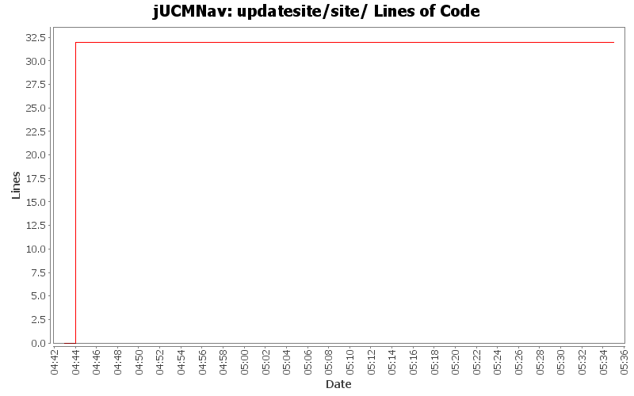

Summary Period: 2005-06-29 to 2005-06-29
[root]/updatesite/site

Total Lines Of Code:
32 (2006-03-31 18:01)
| Author | Changes | Lines of Code | Lines per Change |
|---|---|---|---|
| jpdaigle | 4 (100.0%) | 32 (100.0%) | 8.0 |
Update site xml descriptions
0 lines of code changed in:
Initial update site scripts. Almost work.
32 lines of code changed in:
Generated by StatCVS 0.2.4